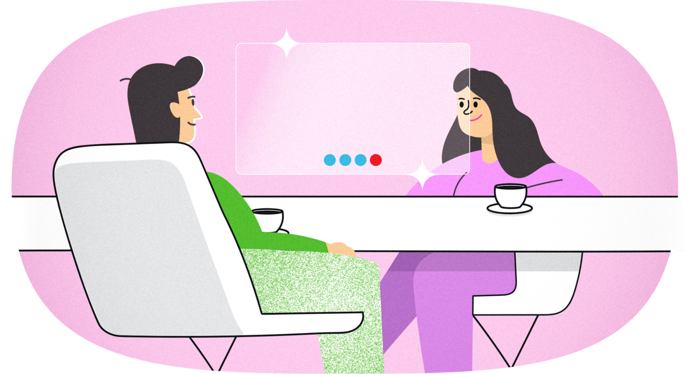

Огляд процесу створення вебсайтів
Слово «вебсайт» охоплює дуже різні за типами проєкти. Цим
словом можуть називати як простенькі посадкові сторінки, так і
цілі онлайн-сервіси, що містять в собі сотні різноманітних
екранів та тисячі функцій.
Цілком зрозуміло, що складність створення цих продуктів різна.
Посадкову сторінку може створити один фахівець протягом дня. А
от створити онлайн-сервіс без команди буде непросто. Та й дня
для цього явно не вистачить.
Але попри значні відмінності в деталях, основа процесу
створення вебсайтів все ж спільна. Цей процес можна поділити
на три етапи:
В цьому матеріалі ми окремо розглянемо і характеризуємо кожний
з цих етапів!
Передвиробництво
Коли ви купуєте продукти чи техніку (скажімо, смартфон), у вас
є чимало можливостей оцінити товар, перш ніж віддати за нього
гроші. Смартфон має конкретні характеристики, його можна
потримати в руках, роздивитись. А якщо залишились сумніви,
почитати відгуки інших покупців.
З вебсайтами ситуація складніша. В момент замовлення сайту
його ще не існує. Тож розробнику (це може бути як фрилансер,
так і компанія) необхідно оцінити продукт, якого фактично
немає.
Як правило, оцінка вебсайтів заснована на оцінці робочих годин
виконавця. Припустимо, виконавець вважає, що на створення
вебсайту йому знадобиться десять робочих годин. Одну свою
робочу годину він оцінює, скажімо, в 350 грн. Відповідно,
вартість проєкту складе 3500 грн. Начебто просто.
На перший погляд, так. Але насправді заздалегідь правильно
порахувати потрібну кількість робочих годин складно. Адже
замовнику може не сподобатись перший макет, який йому
запропонує дизайнер, і тоді доведеться починати спочатку. Або
ж виконавець просто не врахував, що в макеті ще треба створити
унікальну добірку з шести іконок, на кожну з яких знадобиться
бодай одна робоча година. Або ж десяти годин виявилось просто
недостатньо. Тоді проєкт виявиться для виконавця невигідним. А
що, як після всіх зусиль і витраченого часу, замовнику все
одно не сподобається результат і вебсайт буде не таким, як він
сподівався?
Власне, для того, щоб з’ясувати, який продукт має отримати
клієнт, яка в нього має бути стилістика, яка функціональність,
бюджет та виробничий графік, і потрібен етап передвиробництва.
Щоб з’ясувати візію проєкту та його виробничий план під час
етапу передвиробництва проводиться:
- Інтерв’ю клієнта.
- Підписання договору.
- Дизайн-дослідження.
-
Розробка проєктної документації та її підписання.
-
Погодження бюджету та календарного плану робіт.
Дослідимо всі ці етапи докладніше.
Інтерв’ю клієнта

Інтерв’ю клієнта — це перший етап взаємодії з виконавцем.
Саме під час інтерв’ю формується загальне уявлення про
проєкт.
Формат інтерв’ю буває дуже різним — зустріч наживо,
спілкування через електронну пошту, телефонна розмова або
відеоконференція в Zoom чи скайп.
Мета інтерв’ю — з’ясувати якомога більше інформації про
замовника та його проєкт. Зокрема, визначити галузь,
аудиторію та завдання майбутнього вебсайту.
І хоч загального стандарту для проведення інтерв’ю не
існує, загальний принцип для його проведення такий: чим
більше детальних запитань, тим краще.
Підписання договору
Краще за все, виконувати будь-які роботи, спираючись на
договір.
Окрім договору на створення вебсайту, завжди має бути
підписана додаткова проєктна документація. У випадку, якщо
потрібно створити посадкову сторінку, достатньо простого
брифа. А от для багатосторінкового сайту знадобиться
повноцінне технічне завдання.
Якщо у замовника проєктна документація вже готова,
виконавець має з нею ознайомитись і за необхідності
уточнити та доповнити її. Якщо такої документації ще немає,
виконавець має створити її та долучити відповідний додаток
до договору.
Як правило його підписують перед початком виробництва, але
ми рекомендуємо підписувати договір і на проведення
дизайн-дослідження, і на створення проєктної документації
(якщо її необхідно створити).
Дизайн-дослідження
В загальних рисах, дизайн-дослідження для вебсайтів можна
проводити відповідно до алгоритму, який ми описали раніше в
матеріалі «Дизайн-дослідження». Тут так само необхідно
віднайти та обґрунтувати стилістичні рішення, що одночасно
відповідатимуть галузі, до якої належить проєкт, його
індивідуальним рисам та сучасній моді. А що ще важливіше,
завдяки дизайн-дослідженню виконавець та замовник можуть
погодити візію проєкту, чим суттєво зекономлять час на
погодження макетів.
Оскільки проведення дизайн-дослідження — це теж робота,
справедливо, щоб замовник її оплатив. Але перш ніж просити
гроші за цю роботу дуже важливо роз’яснити її цінність та
донести те, що дизайн-дослідження виконується індивідуально
для цього клієнта.
Проєктна документація
Як правило, проєктною документацією для посадкових сторінок
є бриф, а для складніших проєктів — технічне завдання.
Відмінність тут у кількості деталей. Для детального опису
посадкової сторінки буде цілком достатньо декількох
аркушів. А от у випадку багатосторінкового вебсайту чи
навіть вебсервісу — точно ні.
Технічне завдання має описувати структуру вебсайту,
технології, які повинні в ньому застосовуватись, вимоги до
дизайну, верстки та до функціонування окремих розділів. Чим
докладніше технічне завдання, тим легше точно оцінити обсяг
майбутніх робіт.
Ліпше за все, коли технічне завдання розробляє та сама
команда, яка створює вебсайт. Технічне завдання можна
порівняти з кресленнями будинку.
Погодження бюджету та календарного плану робіт
Перед початком виробництва вебсайту замовник та виконавець,
спираючись на проєктну документацію та дизайн-дослідження,
формують календарний графік розробки посадкової сторінки чи
вебсайту, а також бюджет на виконання робіт
Приклад бюджету та календарного плану робіт.
Календарний план та проєктна документація, звісно, не є
гарантією того, що проєкт неодмінно буде готовий у
відповідний термін. Тут багато чого залежить від людини, що
відповідає за організацію робіт, її вміння переконувати та
змушувати всіх учасників процесу, включно із замовником,
дотримуватись погоджених термінів. Календарний план тим
точніший, чим більше у виконавця досвіду і
відповідальності.
Зробивши цю обмовку, з чітким бюджетом та прописаним й
погодженим планом робіт, можемо починати виробництво!
Виробництво
У випадку вебсайтів виробничі процеси можна поділити на п’ять
складових:
-
Підготовка змісту сайту (текстів, ілюстрацій тощо)
- Створення дизайну сайту
- Верстка (чи фронтенд-розробка)
-
Програмування (бекенд-розробка). У випадку посадкових
сторінок програмування, як правило, відсутнє.
- Контроль якості
Якоюсь мірою, всі описані вище процеси — складові вебдизайну.
Тож давайте кожну з них розглянемо докладніше.
Підготовка змісту сайту
Зміст вебсайту (його на жаргоні називають контент, від англ.
content «зміст») — це будь-яка інформація, розміщена на ньому.
Тексти, відео, фото, ілюстрації, презентації та прайси — все
це зміст.
Зміст вебсайту виконавці, як правило, готують з клієнтами
спільно. Для комерційних сайтів тексти часто створюють
копірайтери.
Створення дизайну сайту
Ну от ми, нарешті, і дістались дизайну!
Процес створення дизайну вебсайтів можна поділити на такі
окремі етапи:
-
Розробка дизайн-концепції.
Це, як правило, один чи декілька екранів вебсайту,
створених для демонстрації клієнту. Вони потрібні для того,
щоб переконатись, що естетично проєкт відповідає
очікуванням клієнта.
-
Розробка макетів повноцінної настільної версії
вебсайту.
Коли дизайн-концепція погоджена, створюються макети для
всіх сторінок вебсайту або вебсервісу, і як правило
дизайнери починають з настільної версії, адже замовникам її
легше сприймати. Коли всі макети настільної версії
створено, їх знову погоджують із замовником.
-
Створення адаптивних макетів вебсайту.
Після погодження настільних макетів, дизайнер створює
адаптивні версії макетів — тобто такі, що демонструють
роботу сайту на екранах різного розміру. Зокрема, на
смартфонах та планшетах.
-
Розробка анімацій для вебсайту.
Для сучасних вебсайтів доцільно також показувати, як будуть
себе поводити інтерактивні елементи вебсайтів — меню, що
спливає, підказки тощо. Для цього дизайнери створюють
невеликі анімовані ролики, що демонструють ці дії на
майбутньому сайті.
-
Створення та опис графічного інтерфейсу.
Для складних вебсайтів та вебзастосунків часто створюється
окремий документ з докладним описом всіх компонентів
інтерфейсу сайту та їхніх станів.
-
Підготовка до верстки.
Вже коли макети повністю розроблені, вебдизайнери готують
їх до верстки. Під час цього процесу їм необхідно
переконатись, що всі стани всіх елементів є наявними, що
всі анімації описані. Корисно супроводжувати дизайн-макети
пояснювальною запискою.
Наступним етапом роботи над вебсайтом стає верстка.
Верстка (чи фронтенд-розробка)
Коли слово «верстка» кажуть в контексті вебсайтів, мають на
увазі створення на основі макетів їхніх HTML-втілень. Часто
для нескладних посадкових сторінок верстка відбувається
засобами візуальних редакторів, таких як Webflow, або
ReadyMag, а верстку в такому випадку виконує сам дизайнер.
Для складніших продуктів, — таких як презентаційні сайти чи
онлайн-сервіси, — можливостей подібних редакторів поки що
недостатньо. Тож для них верстку виконують окремі фахівці.
Раніше їх так і називали «верстальники» (або
«HTML-верстальники»).
Але протягом останніх років верстка, як окремий напрямок
роботи, майже зникла. Тепер вона стала частиною масштабнішого
процесу — фронтенд-розробки.
Тут, певно, треба пояснити, що раніше вебсайти мали суттєво
обмежені функції. І в межах їхнього інтерфейсу (це по суті
синонім слова «фронтенд») ніяких програмних алгоритмів не
було. Вся програмна частина існувала в межах так званого
бекенду.
Щоб зрозуміти, що мається на увазі, можете уявити собі,
скажімо, старий автомат з продажу жетонів у київському
метрополітені. В ньому фронтендом була передня панель з
отвором для грошей та ще ківшик для видачі придбаних жетонів.
А бекендом, відповідно, були механізми, приховані за цією
панеллю. Саме вони виконували всю роботу: сканували купюри,
аналізували їх номінал, видавали жетони.
Сучасні термінали з продажу поїздок стали набагато
складнішими. В них, перш ніж розрахуватись, можна вказати
потрібну кількість поїздок, побачити суму до сплати, а якщо
вона виявиться завеликою — відредагувати її. Ціла купа
можливостей!
Вебсайти теж стали набагато складнішими. І з точки зору суто
візуальних рішень, і навіть з точки зору окремих програмних
підходів. Наприклад, коли ви заповнюєте форму замовлення на
сайті, і в ній відбувається перевірка на відповідність полів,
без перезавантаження сторінки — це вже результат роботи
алгоритмів, хоч це ще і не бекенд.
Для простих проєктів участі дизайнера та фронтенд-розробника
може бути цілком достатньо. Скажімо, для посадкових сторінок
або для презентаційних вебсайтів. А от для розробки
вебсервісів в команді як правило є один чи навіть ціла команда
бекенд-розробників.
Програмування (бекенд-розробка)
Бекенд — це програмний комплекс, що відповідає за збереження
та обробку даних. Складно? Зараз пояснимо простіше.
Бекенд вебпроєкту — дуже важлива його складова, хоч для
звичайного користувача він часто є невидимим. Для нього
вебсайт — це і є його інтерфейс. Але всередині вебсервісів
існують численні алгоритми. Тисячі, десятки тисяч рядків коду,
що й змушують вебпроєкт працювати.
На фронтенді все наче просто. Наприклад, користувач сайту хоче
придбати книгу. Він додає її до кошика. Вирішує не відкладати
оплату на потім, і купує книги за допомогою картки онлайн. А
за день чи декілька днів поштар приносить йому замовлену
книгу.
Але насправді, щоб все було просто для користувача, програмний
алгоритм виконує силу силенних перевірок та непомітних дій.
Бекенд перевіряє, чи є дана книга в наявності на складі, чи її
ціна відповідає тій, що записана в прайсі, чи правильно людина
вказала свої дані, чи списались гроші з її картки, чи
зменшилась кількість примірників до продажу на цю одиницю, чи
відповідальний за доставлення книжок менеджер отримав
відповідне сповіщення.
А ще бекенд вирішує, що робити, якщо, скажімо, одну книгу
майже одночасно хочуть придбати два користувачі. Або що
робити, якщо покупцю не вистачило грошей на картці — залишити
книгу в продажі чи зарезервувати її за цим покупцем?
І це лише маленький відсоток процесів, які вирішуються на
бекенді подібного проєкту.
Буквально кожний процес вебсервісу, якщо дивитись на нього
очима бекенд-розробника — це десятки уточнювальних запитань та
сотні різних випадків, кожен з яких має бути пропрацьований,
щоб система правильно виконувала свої задачі.
Контроль якості
Над деякими вебпроєктами робота може тривати декілька місяців
чи навіть років. Сайти можуть містити в собі десятки й сотні
екранів інтерфейсів, тисячі та десятки тисяч слів тексту, а ще
— десятки чи навіть сотні сторінок програмного коду. І все це
створюють люди, а значить, помилки неминучі.
По-справжньому професійні команди намагаються зменшити
кількість помилок. Для цього вони залучають різних фахівців.
Для аналізу текстів — редакторів чи коректорів. Для дотримання
якості дизайну — артдиректорів. А для перевірки працездатності
інтерфейсів — фахівців з контролю якості (так званих
QA-фахівців, від англ. Quality Assurance).
Задача останніх — з одного боку, перевіряти відповідність
верстки макетам за різних умов (на різних гаджетах, в різних
браузерах, на різних моніторах), а з іншого — повідомляти
розробників, якщо якась складова частина сайту не відпрацьовує
(скажімо, форма зворотного зв’язку не надсилає лист
модератору).
В маленьких командах окремого фахівця з контролю якості немає,
і цим займається керівник проєкту. Але взагалі оминути цю
стадію неможливо.
Запуск та підтримка
Як правило, до запуску розробка вебсайту відбувається у так
званому тестовому середовищі. Це окремий ресурс, часто
закритий паролем, недоступний для пошукових алгоритмів.
Після завершення робіт та проходження контролю якості вебсайт
публікується офіційно за доменною адресою. Наприклад, у
Креативної Практики така адреса — creativepractice.com.ua.
Щойно проєкт стає доступним широкому загалу, команді
розробників протягом кількох місяців доводиться реагувати на
помилки, які не вдалось усунути до запуску. Це особливо
поширена ситуація для великих проєктів зі значною кількістю
функцій. Відловити всі помилки до запуску майже неможливо, тож
до їх виявлення слід ставитись спокійно і просто якомога
оперативніше усувати їх.
Також після запуску проєкту починається робота з його
просування в інтернеті. Для цього існує багато різноманітних
механік: банерна реклама, пошукова оптимізація, контекстна
реклама, реклама в соцмережах тощо.
Ми не будемо занурюватись надто глибоко в тему просування
сайтів в межах цього курсу, адже вони цілком варті власного
курсу чи навіть серії курсів. Але зазначимо, що у випадку,
якщо компанія створює багатосторінковий сайт, їй корисно
думати про його просування задовго до запуску, адже часто для
того, щоб сайт мав високі результати видачі в пошуковій
системі, він має відповідати цілій низці технічних вимог, які
краще врахувати на ранньому етапі роботи над проєктом.